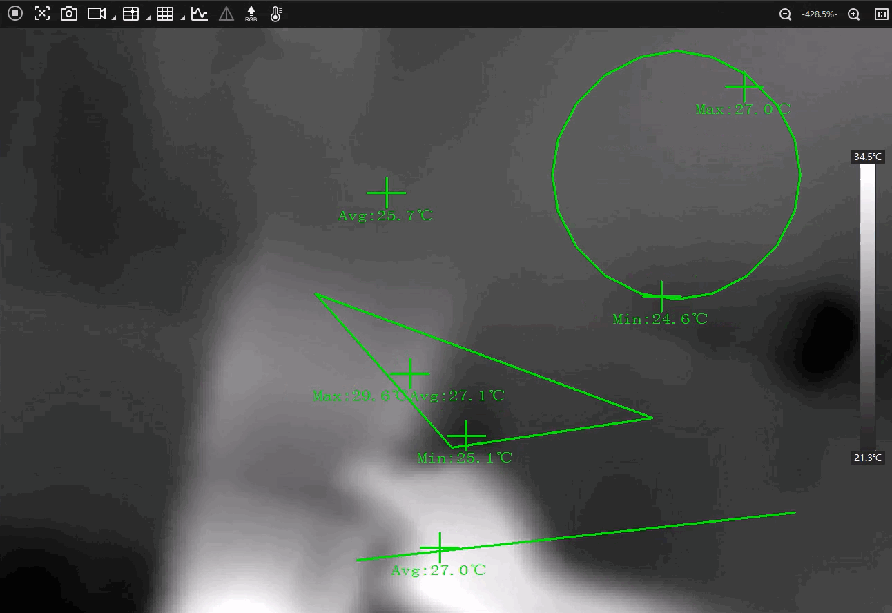
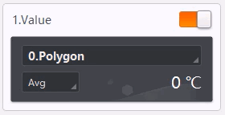

For infrared cameras, you can perform temperature screening configurations, such as drawing different types of temperature screening regions and configuring the relevant parameters, including those related to screening, alarm, and display.
To perform temperature screening configurations, you need to first draw regions for temperature screening.
Make sure you have connected an infrared camera to the Software.
Besides drawing temperature screening regions, you can also set parameters related to screening, alarm, and display on the Temperature Screening Region Settings window.
For the configurations to take effect, you can either click OK on the bottom right corner of the window or click Apply Param on the bottom left. Clicking OK will close the configuration window, whereas clicking Apply Param will not and you can continue with the configurations.
Under Screening, you can configure parameters related to the palette mode, camera basics, global screening, and expert mode.
Select a palette mode for the camera from White Hot, Black Hot, etc.
Adjust the brightness level of the live view image correspondingly. The larger the value, the brighter the image.
When enabled, you can set the gamma value correspondingly. The larger the value, the stronger the contrast.
When enabled, you can set the sharpness level for the edges of the live view image.
When enabled, the signal-to-noise ratio of the image will be boosted, so as to improve the quality of the image.
Set the global temperature screening parameters for the temperature screening regions.
If a germanium glass needs to be added in front of the lens of the infrared camera, the transmittance of the germanium glass can be set by this parameter.
If no germanium glass is needed, you can keep this parameter as 100.
Select a temperature measurement range as needed from -20℃ ~ 150℃ and 0℃ ~ 550℃.
Set the linear distance from the target object to be measured to the device (unit: m).
Set the emissivity of the target object. The emissivity value varies for different objects. Refer to the user manual of the corresponding camera model for details.
When enabled, you can set the corresponding parameters for each temperature screening region respectively.
Set whether to enable reflection for the temperature screening region when there is a high-temperature object at the scene, and a measured object with low emissivity reflects the high-temperature object.
Set the reflectance value of the temperature screening region, which needs to be consistent with the temperature value of the high-temperature object.
Set the linear distance from the target object to be measured to the device (unit: m).
Set the emissivity value of the target object (unit: %). The emissivity value varies for different objects. Refer to the user manual of the corresponding camera model for details.
Under Alarm, you can configure parameters related to the temperature triggered alarms for a single region or of comparing two regions.
Set the alarm rule for a single temperature screening region you have drawn.
For point ROIs, you can set the following parameters for conditions to trigger or restore alarms.
Select > or < from the drop-down list, and enter a temperature value correspondingly to set the alarm rule.
E.g., If you select > and enter 50 in the box, an alarm will be triggered when the screened temperature exceeds 50°C.
Set the threshold for restoring alarms of the region.
E.g., If the tolerance temperature is set to 5°C while the rule for triggering alarms is set to > 50°C, alarms will be canceled when the screened temperature is less than or equal to 45°C.
For polygon, line, and circle ROIs, you can select a specific type of temperature statistics (Maximum, Minimum, Average, and Variation) and set the corresponding alarm triggering and restoring rules. The configuration process is similar to those of setting Point Temp and Tolerance Temp for point ROIs.
E.g., If you select Maximum, >, and enter 50 in the box, an alarm will be triggered when the maximum temperature value of the region exceeds 50°C.
Set up to four multi-region alarm rules which compare the chosen type of statistics of two temperature screening regions. Follow the steps below to configure a rule.
Select a region from the drop-down list for Region Index 1, which will be set as the reference region (i.e., the region being compared to).
Select another region from the drop-down list for Region Index 2, which will be set as the target region.
Choose a specific type of temperature statistics to be compared between the regions from Maximum, Minimum, Average, and Variation.
Select > or < from the second drop-down list, and enter a temperature value correspondingly to set the alarm rule.
E.g., If you select Maximum, >, and enter 10 in the box, an alarm will be triggered when the maximum temperature value of the target region is 10°C greater than that of the reference region.
Under Display, you can configure parameters related to the display settings of the live view window and the temperature window.
When enabled, a temperature bar will be displayed on the right side of the live view window.

Figure 4 Temperature BarSelect a overlay mode for the region information from the followings.
None: Disable region information overlay. No information is displayed when the camera acquires images or when the images are saved.
Camera: Overlay information of the temperature screening regions to the camera, so that the information will be displayed when the camera acquires images and when the images are saved.
Client: Overlay information of the temperature screening regions to the Client, so that the information will be displayed when the camera acquires images, but not when the images are saved.
You can set up to 4 displays of temperature values and 1 display of the temperature curve to be displayed on the Temperature Window. For each display, you can select a temperature screening region and a type of statistics as shown below.

Figure 5 Temperature Window SettingsRefer to Temperature Window for how the display outcome looks like.